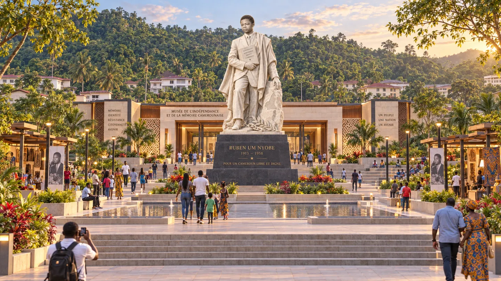

IDÉES DE PROJETS
Après le diagnostic, la proposition.
Les cahiers du LCIR documentent ce qui est. Cette section propose ce qui pourrait être : des projets structurants pour le Cameroun, décrits avec le même niveau d’exigence qu’une publication — programme, impacts, budget, phasage, gouvernance et risques.
« Une idée de projet n’est utile que si elle est assez précise pour être contestée. » Chaque dossier publié ici est un avant-projet conceptuel : les montants et les fréquentations sont des hypothèses de planification, jamais des devis.
AMÉNAGEMENT, MÉMOIRE ET DÉVELOPPEMENT TERRITORIAL

PROJET N°001 · ESÉKA, NYONG-ET-KÉLLÉ AVANT-PROJET CONCEPTUEL
Mémorial Ruben Um Nyobè à Eséka
Un complexe mémoriel, culturel, touristique et urbain au terme de l’avenue d’Eséka : monument, Musée de l’Indépendance et de la Mémoire Camerounaise, village culturel Bassa, amphithéâtre, restauration et artisanat. L’avenue existante n’est pas effacée — elle devient la première étape de la visite et le canal par lequel la ville capte les retombées.
14,45 MdFCFA d’investissement central
100 000visites par an visées
2,2 MdFCFA dépensés localement
2027–2032quatre phases conditionnelles
COMMENT LIRE CES DOSSIERS
Un dossier d’idée de projet n’engage aucune institution et ne remplace aucune étude réglementaire. Il sert à rendre une proposition discutable : en posant des chiffres, un calendrier et des conditions de décision, il expose ses propres points faibles au lieu de les masquer. Les critiques documentées sont les bienvenues.
PROPOSER OU CRITIQUER UN PROJET
Vous portez un projet structurant, vous disposez de données de terrain, ou vous souhaitez contester une hypothèse de l’un de ces dossiers ? Écrivez-nous — les contributions documentées sont intégrées et créditées.
← Toutes les publications
LCIR · Observer. Comprendre. Construire.